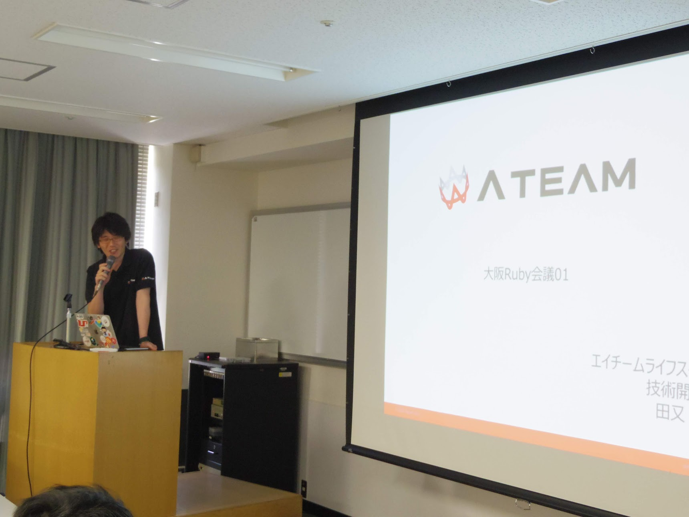
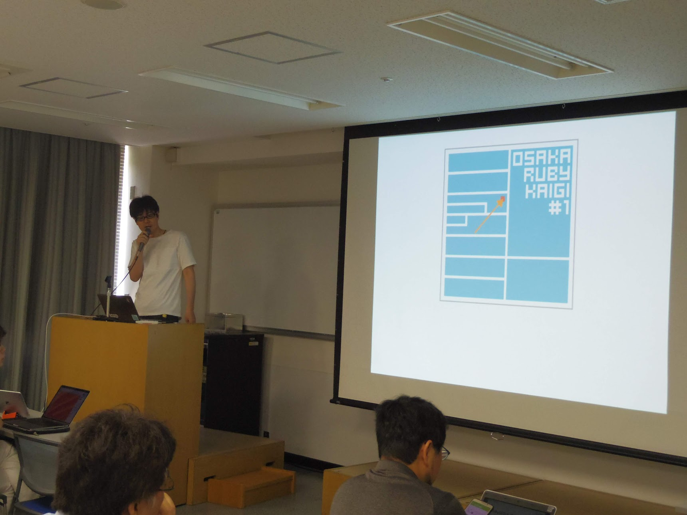
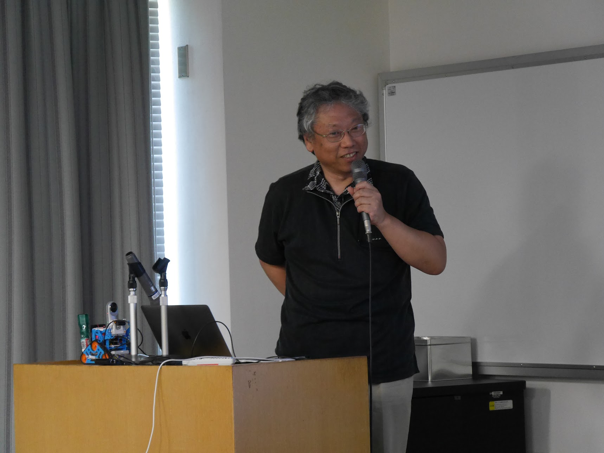
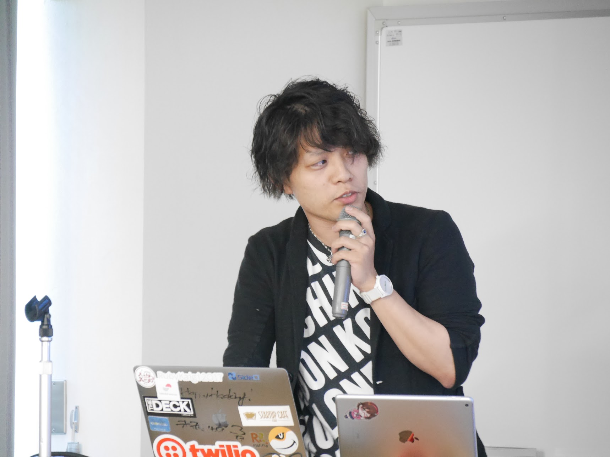

RegionalRubyKaigi レポート (69) 大阪 Ruby 会議 01
初稿：2018-08-26
RegionalRubyKaigi レポート 大阪 Ruby 会議 01
はじめに
- 日時：2018年7月21日（土）10:00〜17:00（懇親会: 18:30〜）
- 場所：大阪科学技術センター(401号室)
- 主催：Ruby関西(ルビーカンサイ)
- 後援：エイチーム Aiming エネチェンジ
- 写真：大阪Ruby会議01グループ写真
- Togetterまとめ： https://togetter.com/li/1249323
- 公式タグ・Twitter：#osrk01 
大阪Ruby会議とは
2018年7月21日（土）に大阪Ruby会議01が初めて開催されました。 以前までは関西Ruby会議という規模で開催していましたが、 今回からより地域に密接したRuby会議にしようというということになり、 よりローカルな大阪Ruby会議として開催されました。 また、今回は大阪市にある科学技術センター(http://www.ostec.or.jp)で 総勢163名(運営スタッフ含む)の方にご参加いただきました。
オープニング

- 発表者
- 尾篭さん@ogom 関西Ruby会議は200-300人規模で2年周期で開催しているので、 今回は大阪Ruby会議ということにして少し小さい規模にして毎年実施できるようにした。 そして今回のステッカーのデザインとしてモチーフにしたのは 水都である大阪の堀や川をイメージして作られましたとのこと。
エイチームにジョインして行った技術改革や実際のお金の話
- 発表者
- ritoさん@chimame_rt[スポンサーLT] 2016年にエイチーム社にジョインしてからウェブ開発のインフラなどを大きく変更し 結果として会社の運用向上に貢献したおかげで提示された給料が上がっていったと なかなか生々しい話でした。(会社的には許可が出ているのも驚き。)
Rubyはなんでできているの？(基調講演)

- 発表者
- まつもとゆきひろさん@yukihiro_matz Rubyが誕生して(概念が生まれて)から25年の節目となった今年。 Rubyができるまでの秘話や今後リリースする予定のRuby3、そして その先の未来についてRubyがどうあるべきかを考えているとのことでした。
個人的には最近のMatzの講演でよく聞く内容でもあると感じたので あえてこちらで紹介するよりも、実際に講演を聞いた方が良いかと思うので割愛させていただきます。
BigQuery on Rails

- 発表者
- Aiming[スポンサーLT] スマホアプリがメイン事業であるAiming社では、そのアプリ事業を支える 社内用のウェブアプリが存在します。 膨大なデータをどのようにしてRailsで扱うかをBigQueryとしてうまく付き合っていこう というものでした。
Complexily on you

- 発表者
- Yuki Nishijimaさん@yuki24 サーバーサイドのフレームワークであるRailsと フロントエンドのライブラリながらなんでも書けるReactで お互いの間で葛藤しつつも、うまく取り入れることでよりハッピーなハックをしていこうという内容でした
GR-CITRUSのいろいろ

- 発表者
- たろサさん@momoonga
- スライド(https://www.speakerdeck.com/tarosay/gr-citrus-iroiro) GR-CITRUSの設計者でもあり、mrubyの第一人者のたろサさんに 実際に島根銀行の本店で取り扱った調光式ブラインドや、 タミヤ製のカムロボを改造して、360度カメラを実装させてその場で撮影したり ライブコーディングでGr-CITRUSのLEDを点灯させてみたりと Rubyでもここまでできるんだよと紹介していただきました。
LT大会
休憩を挟んだのちに参加者のLT大会が始まりました。 LT登壇者の数も飛び入りを含めると総勢10名を超えるものになりましたので 全て紹介できないのですが、スライドを公開している方に限って掲載さえていただきます。
Introducing Fn Project
- 発表者
- ayuminさん@ayumin
- スライド(https://www.slideshare.net/ayumin/introducing-fn-project) herokuからセールスフォース、オラクルと移り、 現在もクラウドサーバの最前線に立って先陣を切る中で 最近リリースされた「Fn Project」について紹介していただきました。
怒り駆動開発 -キレる技術-

- 発表者
- jokerさん@joker1007
- スライド(https://speakerdeck.com/joker1007/nu-riqu-dong-kai-fa-kireruji-shu-number-osrk01) 普段はいたって温厚であるはずのjokerさんがSNSや独り言でなぜキレるのか。 キレることでどう開発に影響するのかを紹介していただきました。 「不満があるからキレる。不満を解決するのがエンジニアとしての仕事である。 だからさらにキレる。しかし、キレる対象は常に自分である。」(なるほど)
コミュニティの力が本当にすごいという話

- 発表者
- 桐生あんずさん@anzu_mmm
- スライド(https://www.slideshare.net/KyokaFujiike/osakarubykaigi01/KyokaFujiike/osakarubykaigi01) プログラミング初心者だった桐生さんがRubyコミュニティに関わって世界が変わった！ そして学内の未経験の人に対しても自らコーチングすることで、徐々にエンジニアの輪が広がっていった。 といったことを話していただきました。
もう「クレデンシャルください」なんて言わせない

- 発表者
- zaruさん@zaru
- スライド(https://speakerdeck.com/zaru_sakuraba/mou-kuredensiyarukudasai-nanteyan-wasenai) Railsでの秘匿情報の管理について環境変数のキーやアクセスキーをくださいと言われても 秘匿情報なので渡し方に神経を使ったりするのでRails5.2から実装された 「credential」ファイルを容易に管理できる「KMS+yaml_vault」を使用すれば YAMLの構造を保ったままvalueだけ暗号化できるのでコードレビューがやりやすいよね。これこそ最高！
コミュニティを立ち上げて実感した「ガチ初心者向け」勉強会の失敗しないやり方について

- 発表者
- 私@yucky_sun
- スライド(https://www.slideshare.net/yukimasaki/the-way-ofstudymeetingnotfailing) 地域コミュニティの勉強会ではいくら初心者歓迎と書いてあっても 全くコードを書いたことのない未経験エンジニアからすればわからないことが多いと感じたため 個人でその方々を対象にした勉強会を開催してみたら、割と人が集まったにも関わらず メンタルをやられる結果になったので、そうならないようにするためにはどうしたらいいかをまとめてみました。
著者について
- @yucky_sun(ゆっき) Rails+Reactで遠隔診療サービスの「スマ診」でサーバサイドの開発担当。 Web開発のみならずIoTやVUI,VRなど新しい技術についてもこっそり勉強しています 個人的主観で書いたブログもあります。 (https://note.mu/yucky_sun/)